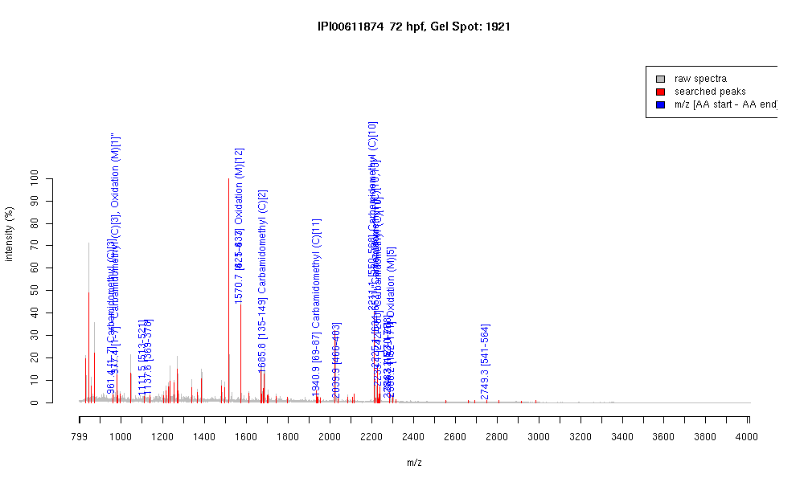

| Name | PREDICTED: similar to KIAA1982 protein |
|---|---|
| MW | 83146.2 |
| PI | 9.73 |
| Mascot Protein Score | 70 |
| Masses (matched / unmatched) | 13 / 58 |

| Peptide | MZ (calc) | MZ (observed) | Error (DA) | Error (PPM) | Start | Stop | Modifications |
|---|---|---|---|---|---|---|---|
| MDCSHRR | 961.4091 | 961.4346 | 0.0255 | 27 | 1 | 7 | Carbamidomethyl (C)[3] |
| MDCSHRR | 977.4039 | 977.4211 | 0.0172 | 18 | 1 | 7 | "Carbamidomethyl (C)[3], Oxidation (M)[1]" |
| SSRLDQHIR | 1111.5967 | 1111.5465 | -0.0502 | -45 | 513 | 521 | |
| SFRQASSLNK | 1137.6011 | 1137.5524 | -0.0487 | -43 | 369 | 378 | |
| SFSQSSNFNLHMR | 1570.7067 | 1570.66 | -0.0467 | -30 | 425 | 437 | Oxidation (M)[12] |
| SFSQSSNFNLHMR | 1570.7067 | 1570.66 | -0.0467 | -30 | 621 | 633 | Oxidation (M)[12] |
| NCFICTQCGKILASK | 1685.8171 | 1685.8009 | -0.0162 | -10 | 135 | 149 | Carbamidomethyl (C)[2] |
| DLVTSATETECAGGFGIGR | 1940.9017 | 1940.9279 | 0.0262 | 13 | 69 | 87 | Carbamidomethyl (C)[11] |
| IHTGEKPFTCTQCGKSFR | 2039.979 | 2039.9388 | -0.0402 | -20 | 466 | 483 | |
| IHTGEKPFTCTQCGKSFNR | 2211.0435 | 2211.103 | 0.0595 | 27 | 550 | 568 | Carbamidomethyl (C)[10] |
| IHTGEKPFTCTLCGKSFNK | 2225.0842 | 2225.1177 | 0.0335 | 15 | 634 | 652 | "Carbamidomethyl (C)[10,13]" |
| IHTGEKPFTCTQCGRSFNR | 2239.0496 | 2239.1484 | 0.0988 | 44 | 242 | 260 | Carbamidomethyl (C)[10] |
| IHTGEKPFTCTQCWKSFNR | 2283.0798 | 2283.1807 | 0.1009 | 44 | 270 | 288 | |
| LKIHMIIHTGGKPFTCTQCR | 2284.1875 | 2284.1775 | -0.01 | -4 | 152 | 171 | |
| LKIHMIIHTGGKPFTCTQCR | 2300.1824 | 2300.1809 | -0.0015 | -1 | 152 | 171 | Oxidation (M)[5] |
| SSHLNHHMRIHTGEKPFTCTQCGK | 2749.2869 | 2749.3147 | 0.0278 | 10 | 541 | 564 |